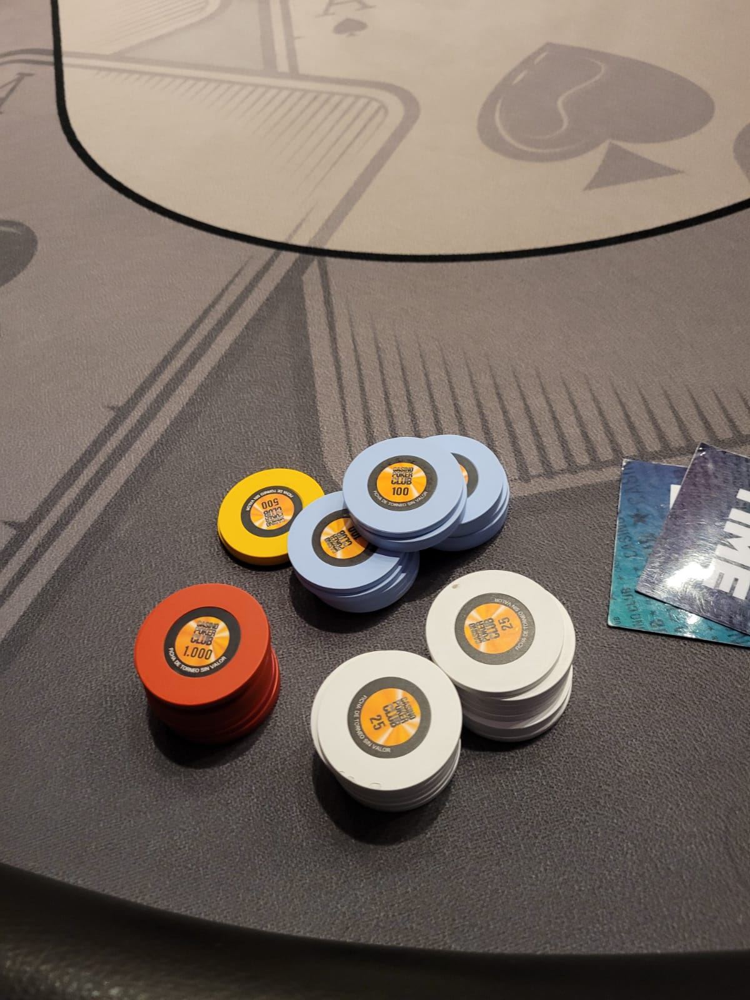
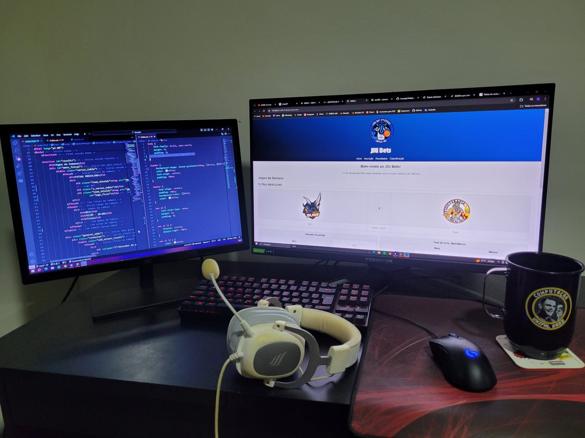

Sobre mim
Meu nome é Pedro Henrique de Almeida, tenho 20 anos e nasci em Águas de Lindóia, no interior de São Paulo, onde vivi quase toda a minha vida. Atualmente, sou estudante de Ciências da Computação na Universidade Federal de Alfenas (UNIFAL-MG). Neste site, vou compartilhar um pouco da minha história e do que me motiva todos os dias a lutar por tudo o que conquistei e ainda quero alcançar.
Meus Hobbies Dentro e Fora da Rotina
Neste ponto, descrevo um pouco mais da minha história junto dos meus hobbies dentro e fora da minha rotina atual.
Tênis
Atualmente, com a rotina intensa da faculdade, não tenho praticado tanto, mas o tênis foi essencial na construção de quem sou hoje. Comecei a jogar com meu pai aos cinco anos, em 2009, e desde então o esporte sempre fez parte da minha vida. Como comecei cedo, aos 12 anos, meus treinadores perceberam meu potencial em relação aos meus colegas e me incentivaram a participar de competições maiores. Foi então que entrei para a Federação Paulista de Tênis (FPT). Um ano depois, alcancei o primeiro lugar no ranking paulista, uma conquista que motivou ainda mais a mim e a meus pais. Mantive minha dedicação ao tênis até os 15 anos, quando a pandemia de Covid-19 interrompeu meus planos e me abriu portas para explorar outras áreas que hoje são muito importantes para mim (vou falar mais sobre isso adiante).

Futebol
Na minha infância, quando não estava nas quadras de tênis, meu tempo era dedicado ao futebol. Passava horas jogando com os amigos, muitas vezes saindo de casa logo cedo e só voltando à noite, depois de passar o dia todo no campo. O futebol sempre foi uma paixão tão intensa quanto o tênis, algo que nunca consigo deixar de lado. Desde pequeno, me encantava com a energia e a união que o jogo trazia, e cada partida com meus amigos era uma oportunidade de rir, competir e me divertir ao máximo. Mesmo hoje, com a rotina corrida, sinto que o futebol é algo essencial, que carrega memórias e valores que levo comigo.
Além do amor pelo futebol, sou torcedor apaixonado do Santos, uma escolha muito influenciada pelo que o Neymar fez pelo clube entre 2009 e 2013. Foi uma fase mágica em que ele levou o Santos ao topo, consagrando-o o melhor time das Américas em 2011. A cada partida, era impossível não sentir orgulho e empolgação ao ver o Santos brilhar em campo, algo que, sinceramente, está difícil de reviver ultimamente, rs. Foi nessa época que me tornei santista de coração, com certeza, por conta de tudo que aquele camisa 11 fez pelo clube.
Baralho
Minha família, tanto do lado paterno quanto materno, é bastante unida. Sempre que combinamos de nos reunir, jogamos truco. Desde pequeno, tenho contato com o baralho, mas de uma forma saudável e divertida. Para mim, a principal função do jogo é justamente essa: proporcionar momentos de diversão com a família e amigos.
Além do truco, ao longo dos anos, acabei conhecendo o pôquer, um jogo que realmente me fascinou. Diferente de outros jogos de baralho que dependem de sorte, o pôquer envolve probabilidades, leitura visual e lógica matemática. A longo prazo, o jogador mais preparado e estudado sempre terá vantagem, o que faz você sempre estar buscando aprender um pouco mais sobre o jogo. Em 2024, viajei para Bariloche, na Argentina, e pela primeira vez tive a oportunidade de jogar pôquer em um cassino. Sem dúvida, foi uma das experiências mais divertidas que já tive. A sensação que vivi ali é algo que não consigo descrever, foi um momento incrível que quero sentir mais vezes e em outros países.
Computação
Minha história com a computação começou junto com o início da pandemia de Covid-19, quando praticar esportes deixou de ser uma opção. Comprei meu primeiro computador para acompanhar as aulas online, e foi a partir daí que comecei a explorar o que um computador pode oferecer, tanto em termos de diversão quanto de possibilidades profissionais. Essa descoberta me inspirou a escolher a computação como carreira e caminho para o futuro.
Hoje sou estudante de Ciências da Computação pela Universidade Federal de Alfenas (UNIFAL-MG) e tenho certeza de que estou no caminho certo na minha vida. A cada semestre, me sinto mais apaixonado pela área e mais motivado a estudar computação. Meu objetivo é continuar crescendo e me especializando, sempre em busca de novos conhecimentos que me permitam contribuir de forma significativa para o campo da computação e, futuramente, para a sociedade.
Família
Aqui, compartilho o quanto minha família é importante para mim e como ela influencia minha vida de forma especial.
Meus Pais
Meus pais, minha irmã e minha cachorrinha são muito importantes para mim, e tenho orgulho de fazer parte dessa família. Sou imensamente grato por tudo o que meus pais fazem por mim e espero, um dia, poder retribuir e dar orgulho a eles.
União
A união da minha família é algo muito especial para mim, e acho isso diferente em relação a outras famílias. Tanto do lado do meu pai quanto da minha mãe, todos são muito próximos, o que cria um ambiente leve para mim. Minha família materna é composta por oito irmãos, enquanto no lado do meu pai tem duas irmãs. Minha mãe é uma das irmãs mais novas, o que me torna um dos primos mais novos também — alguns dos meus tios já são até avós! Isso dá uma ideia de como minha família é grande, e eu acho isso incrível.
Cada vez que nos reunimos, sinto que me transformo. É como se todos os problemas do dia a dia desaparecessem, e consigo dar toda minha atenção a eles. Esses momentos me trazem uma alegria diferente, como as conversas descontraídas e as risadas que temos. Estar com minha família me dá uma sensação que nunca vou encontrar em outro lugar. É nesses encontros que percebo como cada um, com suas histórias e personalidades, contribui para tornar nossa família tão especial.
Viagens
Coloquei este tópico junto ao da minha família porque, todo ano, viajamos juntos, e eu não consigo imaginar uma viagem sem eles. A maioria dessas viagens é para alguma praia, que, na minha opinião, é o destino perfeito para curtir com a família inteira. O clima descontraído, os churrascos e a sensação de estarmos juntos em um lugar diferente tornam esses momentos inesquecíveis. Cada viagem é uma nova coleção de memórias que ficam guardadas no meu coração.
Amigos
Algumas amizades que construímos ao longo da vida são realmente únicas; alguns amigos se tornam tão próximos que os consideramos como irmãos. Por isso, quando falo sobre minha vida pessoal, não posso deixar de mencionar meus amigos, que fazem parte da minha rotina, me motivando e dando risadas todos os dias, seja na faculdade ou na cidade onde nasci. Eles estão sempre presentes nos momentos importantes e fazem com que cada dia seja mais leve e divertido.